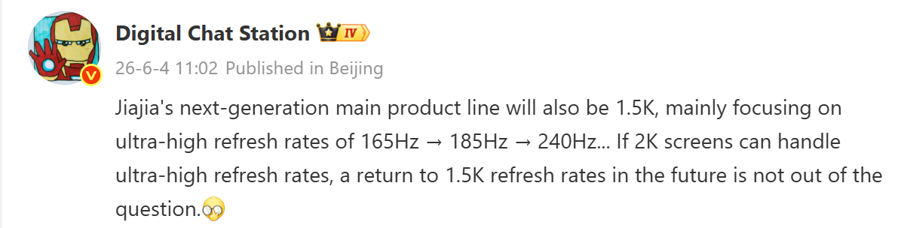

OnePlus, 미래 스마트폰 디스플레이 업그레이드 계획
작년에 출시된 OnePlus 15는 1.5K 해상도와 165Hz 주사율을 갖춘 OLED 디스플레이를 탑재한 유일한 플래그십 스마트폰입니다. 올해 말 출시될 것으로 예상되는 OnePlus 16은 주사율을 185Hz로 더욱 높일 수 있다는 보고가 있습니다. 이제 팁스터 Digital Chat Station의 새로운 Weibo 게시물에 따르면, OnePlus는 미래 기기를 위해 더욱 야심찬 디스플레이 업그레이드를 이미 고려하고 있을 수 있다고 합니다.
초고주사율 우선순위
팁스터의 게시물에 따르면, OnePlus는 차세대 플래그십 스마트폰 라인업 전반에 걸쳐 1.5K 디스플레이를 계속 사용할 것으로 예상됩니다. 이 회사는 초고주사율을 우선시하며, 165Hz에서 185Hz로, 그리고 미래 기기에서는 잠재적으로 240Hz까지 높일 계획을 가지고 있다고 합니다.
팁스터는 2K 패널이 전력 효율, 성능 또는 디스플레이 품질에 큰 타협 없이 이러한 극도로 높은 주사율을 지원할 수 있게 된다면, OnePlus가 미래 플래그십 모델에서 2K 디스플레이로 돌아가는 것을 고려할 수 있다고 덧붙였습니다.
지금까지 스마트폰의 2K OLED 패널은 일반적으로 144Hz 주사율이 최고였습니다. OnePlus 16은 1.5K 해상도와 185Hz 주사율 조합을 제공할 것으로 예상되지만, 2027년에 출시될 수 있는 OnePlus 17이 2K + 185Hz 또는 심지어 2K + 240Hz 디스플레이를 도입할지는 미지수입니다.
높은 주사율의 실용성
이러한 높은 주사율은 이론상으로는 인상적이지만, 많은 사용자에게는 과도할 수 있습니다. 웹 브라우징, 소셜 미디어, 비디오 스트리밍 및 메시징과 같은 일상적인 작업에서는 대부분의 사람들이 표준 120Hz 디스플레이와 비교하여 큰 차이를 느끼지 못할 것입니다.
그러나 고사양 게임에서는 이러한 이점이 더욱 분명해질 수 있습니다. 지원되는 게임은 특히 1인칭 슈팅 게임 및 레이싱 게임과 같은 빠르게 진행되는 경쟁 장르에서 더 부드러운 애니메이션, 낮은 인지 입력 지연 및 더 반응적인 게임 플레이를 제공할 수 있습니다.
경쟁사 동향
경쟁 브랜드의 경우, 올해 말 출시될 Redmi K100 Pro 시리즈 및 iQOO 16과 같은 OnePlus 16 경쟁 제품들도 최대 185Hz의 주사율을 특징으로 할 것으로 예상됩니다. 스마트폰 제조업체들이 게임 및 디스플레이 성능에 점점 더 집중함에 따라, 더 높은 주사율을 향한 경쟁은 아직 끝나지 않은 것으로 보입니다.
총평
OnePlus는 1.5K 디스플레이에서 165Hz를 넘어 185Hz, 나아가 240Hz의 초고주사율을 목표로 하며 디스플레이 기술 혁신을 주도하고 있습니다. 2K 패널의 기술 발전 여부에 따라 미래에는 2K 해상도와 초고주사율의 조합도 기대됩니다. 이러한 높은 주사율은 일반 사용자에게는 과할 수 있지만, 고사양 게임 경험을 크게 향상시킬 것으로 보이며, 경쟁사들 또한 유사한 방향으로 나아가고 있어 고주사율 경쟁은 계속될 전망입니다.
OnePlus 计划升级未来智能手机显示屏
去年发布的 OnePlus 15 是仅有的搭载 1.5K 分辨率和 165Hz 刷新率 OLED 屏幕的旗舰机型。据有消息称，预计将于今年年底发布的 OnePlus 16 可能会将刷新率进一步提升至 185Hz。根据爆料者 Digital Chat Station 在 Weibo 上的最新帖子显示，OnePlus 可能已经在考虑为未来设备提供更具野心的显示屏升级。
超高刷新率优先
根据爆料者的帖子，预计 OnePlus 将继续在下一代旗舰手机系列中使用 1.5K 显示屏。该公司致力于追求超高刷新率，计划将频率从 165Hz 提升到 185Hz，并在未来的设备中可能达到 240Hz。
爆料者补充道，如果 2K 面板能够在不显著牺牲功耗、性能或显示质量的情况下支持这些极高的刷新率，OnePlus 可能会考虑在未来的旗舰型号中回归 2K 显示屏。
到目前为止，智能手机的 2K OLED 面板通常最高支持 144Hz 刷新率。预计 OnePlus 16 将提供 1.5K 分辨率和 185Hz 刷新率的组合，但 2027 年可能推出的 OnePlus 17 是否会采用 2K + 185Hz 或甚至 2K + 240Hz 的显示屏仍不确定。
高刷新率的实用性
虽然这些高刷新率在理论上令人印象深刻，但对于许多用户来说可能过剩。在网页浏览、社交媒体、视频流媒体和即时通讯等日常操作中，大多数人与标准的 120Hz 显示屏相比，可能感觉不到显著差异。
然而，在高规格游戏中，这些优势会变得更加明显。支持的软件（尤其是第一人称射击游戏和赛车游戏等节奏较快的竞技类游戏）可以提供更流畅的动画、更低的感知输入延迟以及更具响应性的游戏体验。
竞争对手动态
在竞争品牌方面，预计将于今年年底推出的 Redmi K100 Pro 系列和 iQOO 16 等 OnePlus 16 的竞争产品也将具备高达 185Hz 的刷新率。随着智能手机制造商越来越注重游戏和显示性能，向更高刷新率迈进的竞争似乎仍未结束。
总结
OnePlus 正致力于推动显示技术创新，目标是将 1.5K 显示屏的刷新率从 165Hz 提升至 185Hz 甚至 240Hz。虽然高刷新率对普通用户日常使用可能并非必需，但它能显著提升竞技类游戏的流畅度和响应速度。随着竞争对手也开始采用类似的高刷新率策略，这一领域的技术竞争将持续升温。
OnePlus、次世代スマートフォンのディスプレイ強化計画
昨年発売されたOnePlus 15は、1.5K解像度と165Hzリフレッシュレートを備えたOLEDディスプレイを搭載したフラッグシップスマートフォンでした。今年後半に登場する見込みのOnePlus 16では、リフレッシュレートがさらに向上し、185Hzに達する可能性があると報じられています。また、ティップスターであるDigital Chat Stationの最新のWeibo投稿によると、OnePlusは将来のデバイスに向けてより野心的なディスプレイのアップグレードを検討しているとのことです。
超高リフレッシュレートへの注力
次世代フラッグシップラインナップにおいて、OnePlusは引き続き1.5Kディスプレイを採用する見込みですが、特にリフレッシュレートの向上に注力しています。計画されているリフレッシュレートの推移は以下の通りです。
- 現在の主力：165Hz
- OnePlus 16（予測）：185Hz
- 将来のデバイス：最大240Hz
また、電力効率やパフォーマンスを損なうことなく2Kパネルがこれらの超高リフレッシュレートをサポートできるようになれば、将来のフラッグシップモデルで2Kディスプレイへ回帰する可能性もあります。現在、2K OLEDパネルの多くは144Hzが上限とされていますが、2027年頃に登場する可能性があるOnePlus 17では「2K + 185Hz」または「2K + 240Hz」の組み合わせが採用されるか注目が集まっています。
高リフレッシュレートの実用性
これらの高いリフレッシュレートは理論上非常に魅力的ですが、多くのユーザーにとっては過剰なスペックとなる可能性があります。ウェブブラウジングやSNS、動画ストリーミングなどの日常的な操作では、標準的な120Hzディスプレイと比較して大きな違いを感じることはないでしょう。
しかし、高負荷なゲームにおいては、これらの利点がより明確になります。特にFPS（一人称視点シューティング）やレーシングゲームのような展開の速い競技系ジャンルでは、以下のメリットが期待できます。
- より滑らかなアニメーション
- 入力遅延の低減
- より反応の良いゲームプレイ
競合他社の動向
競合ブランドにおいても、今年末に発売されるRedmi K100 ProシリーズやiQOO 16といったOnePlus 16の競合製品も最大185Hzのリフレッシュレートを搭載する見込みです。スマートフォンメーカーがゲームおよびディスプレイ性能により焦点を当てる中、より高いリフレッシュレートに向けた競争は依然として続いています。
まとめ
OnePlusは次世代モデルに向けて、185Hzや最大240Hzといった超高リフレッシュレートの実現を目指しており、ディスプレイ技術の革新をリードしています。これらの技術は特に競技性の高いゲームにおいて滑らかな動作と低遅延な操作感をもたらすため、メーカー間の競争は今後も激化する見通しです。
OnePlus Plans for Future Smartphone Display Upgrades
The OnePlus 15, released last year, was the only flagship smartphone to feature an OLED display with the following specifications:
- 1.5K resolution
- 165Hz refresh rate
Reports suggest that the upcoming OnePlus 16, expected to launch later this year, may increase the refresh rate to 185Hz. According to a recent Weibo post by tipster Digital Chat Station, OnePlus may already be considering even more ambitious display upgrades for its future devices.
Prioritizing Ultra-High Refresh Rates
According to the tipster's post, OnePlus is expected to continue using 1.5K displays across its next-generation flagship lineup while prioritizing ultra-high refresh rates:
- Current target: Moving from 165Hz to 185Hz
- Future goal: Potentially reaching up to 240Hz
The tipster added that if 2K panels can support these extremely high refresh rates without significant compromises in power efficiency, performance, or display quality, OnePlus may consider returning to 2K displays for its future flagship models.
To date, 2K OLED panels on smartphones have generally peaked at a 144Hz refresh rate. While the OnePlus 16 is expected to offer a combination of 1.5K resolution and a 185Hz refresh rate, it remains uncertain whether the OnePlus 17 (potentially launching in 2027) will introduce:
- 2K + 185Hz
- 2K + 240Hz
Practicality of High Refresh Rates
While these high refresh rates are impressive in theory, they may be overkill for many users. For everyday tasks such as web browsing, social media, video streaming, and messaging, most people will not notice a significant difference compared to standard 120Hz displays.
However, the benefits become much more apparent in high-end gaming. Supported games—especially fast-paced competitive genres like first-person shooters (FPS) and racing games—can provide smoother animations, lower perceived input lag, and more responsive gameplay.
Competitor Trends
Competing products such as the Redmi K100 Pro series and iQOO 16, both expected to launch later this year, are also anticipated to feature refresh rates of up to 185Hz. As smartphone manufacturers increasingly focus on gaming and display performance, the competition for higher refresh rates shows no signs of slowing down.
Summary
OnePlus is pushing the boundaries of display technology by targeting ultra-high refresh rates of 185Hz and potentially 240Hz. While these high speeds may be overkill for daily tasks, they offer significant advantages for competitive gaming. The brand's roadmap suggests a potential return to 2K resolutions if technical hurdles regarding power efficiency and performance are overcome.

